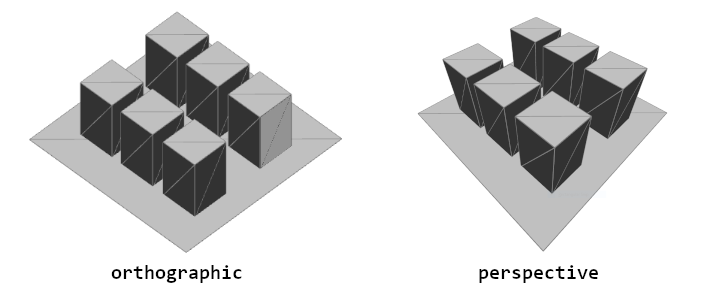

スタイリングと外観
3Dでの作成は、ジオメトリ以上のものです。 カメラ、ライト、そしてマテリアルは、視覚的に興味深い3Dシーンを作成するための重要な要素です。 p5.jsには、ジオメトリの外観を変換するためのツールが多数用意されています。
カメラとビュー
カメラは、3Dシーンの本質的な部分であり、 私たちに3Dで探求したい空間や次元感を与えます。 p5.jsでは、WebGLモードはデフォルトで遠近法カメラを提供していますが、 perspective() または ortho().
透視投影カメラは、遠ざかるにつれて小さく見えるようにオブジェクトを傾けます。 一方、 正射影カメラでは、 ジオメトリは遠ざかるにつれて同じサイズで、消失点はありません。
透視投影カメラで変更できる設定の一つに、視野角またはFOVがあります。 これは、カメラが見ることができる角度で測定されるものです。 単純な例では、ズームのような効果が現れるように見えますが、遠くの形状がどのようにサイズ変化するかにも影響を与えます。
3Dでカメラを扱う際のもう1つの重要な用語は、カメラのフラスタムです。カメラのフラスタムとは、カメラの視野の形状であり、幾何学的な形状を表示できるピラミッド状の形状です。 フラスタムには近接面と遠方面が含まれます。 近接面は、ジオメトリがカメラから描画されるために最低限離れている必要がある距離を定義します。遠方面は、ジオメトリがカメラから離れることができる最大距離を定義します。 これらのそれぞれを変更することで、カメラがどれだけ近く、どれだけ遠くを見ることができるかが影響を受けます。 この選択的にジオメトリを含めるプロセスは、時々「クリッピング」と呼ばれます。

カメラはcamera()に引数を渡すことで移動できますが、コードでカメラを常に移動させたり調整したりするのは面倒です。特にアイデアを試しているときには。 p5.jsには特別なカメラメソッドがあります、orbitControl()それを使って、 マウスを使ってカメラをズーム、パン、および位置決めすることができます。
シーンには複数のカメラがあることができますが、一度にアクティブにできるカメラは1台だけです。p5.jsのスケッチはデフォルトで1台の透視投影カメラがありますが、 perspective()（新しいパラメーターで）またはortho()を呼び出すことで変更できます。 camera()は、アクティブなカメラの位置とカメラが見ている位置を変更するために使用できます。 以下のスケッチで試してみてください。
ライティング
ライティングは3Dシーンのもう1つの重要な部分です。 3Dで形状や深さを伝えるためには、光源が必要です。p5.jsには、スケッチで使用できるいくつかの異なるタイプの光があります。
- ambientLight()
- アンビエントライトは、光の位置や方向を考慮せずに、 すべてのものを少しだけ明るく表示します。
- directionalLight()
- ディレクショナルライトは、1つの方向から光を放射し、シーンの深さを伝えたり、 シーンに「太陽」の光が必要な場合に特に役立ちます。このメソッドは、色と方向を受け入れます。
- pointLight()
- ポイントライトは、ある1点からすべての方向に光を放射し、 電球のようなものに似ています。このメソッドは、光の色と位置を受け入れます。
- spotLight()
- スポットライトは、1点から1つの方向に光を放射します。 この光は円錐形状で放射され、その半径と集中度を調整することができます。
- noLights()
- noLights()は、その後のすべてのジオメトリがライティングなしでレンダリングされるようにします。 これは、フラットでシェーディングされていないジオメトリが必要な場合に役立ちます。
これらのライトは、draw()の中で使用する必要があります。 最大5つのライトを同時にシーンで使用できます。これにより、さまざまで複雑な光源を持つシーンを構成することができます。 以下のインタラクティブな例でボックスをチェックしたりチェックを外したりして、ライティングがどのように組み合わせられるかを確認してください。 アクティブな光源ごとに、その位置や方向を示す視覚的なインジケータがありますが、 これらは説明のために存在することを理解してください。
次の例では、各ライトのコメントを追加・削除して、パラメーターを試してみてください。
マテリアルとテクスチャ
オブジェクトは、そのマテリアルによって異なる外観になります。 マテリアルは、光がジオメトリとどのように相互作用するか、および色（またはテクスチャ）がオブジェクトに適用される方法を決定します。 マテリアルは多様であり、オブジェクトを光沢のあるもの、ざらざらしたもの、または画像でテクスチャ化されたものにすることができます。
このインタラクティブな例では、異なるマテリアルを選択して、ジオメトリの外観にどのような影響を与えるか試してみてください。 マウスを動かして、ディレクショナルライトがマテリアルに与える効果を確認できます。
この例で、異なるライトのコメントを追加・削除して試してみてください:
よりカスタマイズされたマテリアルは、texture()を使用して達成できます。 簡単に言うと、これらはジオメトリの表面にマッピングできる画像です。 これらのテクスチャは、画像からインポートしたり、シェーダーを使用してコード内で生成したりすることができます。 ジオメトリにテクスチャをマップするには、preload()の中でloadImage()を使用し、形状を描画する前にtexture()を呼び出してください。
シェーダーはジオメトリの外観を変更するのに役立ちますが、 このチュートリアルの範囲を超えているため、 シェーダー入門 のページを確認してください。
結論
カメラ、ライティング、マテリアルをコントロールできるようになることで、 スケッチの見た目をより柔軟に決定できるようになり、3Dスケッチに独自のスタイルを導入する可能性が広がります。 WebGL入門シリーズの次のチュートリアルでは、シェーダーが紹介され、 スケッチの見た目をさらに面白い方法で変更することができるようになります。
その他のチュートリアル
このチュートリアルは、p5.jsでWebGLを使用する基本についてのシリーズの一部です。以下の他のチュートリアルをすべてチェックしてください。
- 座標と変換
- WebGLでカスタムジオメトリの作成
- スタイルと外観 (現在ここ)
- シェーダー入門
用語集
カメラ
3Dシーンの視点
ペルスペクティブ
遠くのオブジェクトを小さく見せることで奥行き感を与えるカメラ投影
オルソグラフィック
奥行きに影響されない直交なカメラ投影。 二次元的な外観を与えます。
視野角
カメラがどれだけ見ることができるかを表す角度。
フラスタム
カメラで表示できる全領域を表す幾何学的形状。
近接面と遠方面
近接面は、ジオメトリがカメラに表示されるために最小限離れる必要がある距離を表し、 遠方面は最大距離を表します。
クリッピング
カメラのフラスタムの外にあるジオメトリのように、一部のジオメトリを選択的に表示し、他のジオメトリを表示しないこと。